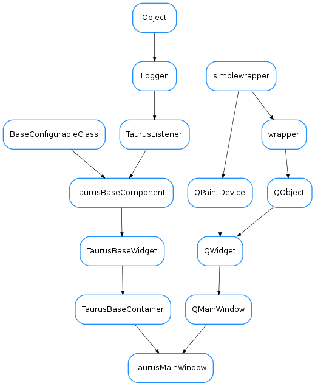

TaurusMainWindow¶

-
class
TaurusMainWindow(parent=None, designMode=False, splash=None)[source]¶ Bases:
PyQt4.QtGui.QMainWindow,taurus.qt.qtgui.container.taurusbasecontainer.TaurusBaseContainerA Taurus-aware QMainWindow with several customizations:
- It takes care of (re)storing its geometry and state (see
loadSettings()) - Supports perspectives (programmatic access and, optionally, accessible by user), and allows defining a set of “factory settings”
- It provides a customizable splashScreen (optional)
- Supports spawning remote consoles and remote debugging
- Supports full-screen mode toggling
- Supports adding launchers to external applications
- It provides a statusBar with an optional heart-beat LED
- The following Menus are optionally provided and populated with basic actions:
- File (accessible by derived classes as self.fileMenu)
- View (accessible by derived classes as self.viewMenu)
- Taurus (accessible by derived classes as self.taurusMenu)
- Tools (accessible by derived classes as self.toolsMenu)
- Help (accessible by derived classes as self.helpMenu)
-
addExternalAppLauncher(extapp, toToolBar=True, toMenu=True)[source]¶ Adds launchers for an external application to the Tools Menu and/or to the Tools ToolBar.
Parameters: - extapp (
ExternalAppActionorlist<str>) – the external application to be launched passed as aExternalAppAction(recommended because it allows to specify custom text and icon) or, alternatively, as a list of strings (sys.argv- like) that will be passed tosubprocess.Popen(). - toToolBar (
bool) – If True (default) a button will be added in the Tools toolBar - toMenu (
bool) – If True (default) an entry will be added in the Tools Menu, under the “External Applications” submenu
See also
ExternalAppAction- extapp (
-
addLoggerWidget(hidden=True)[source]¶ adds a QLoggingWidget as a dockwidget of the main window (and hides it by default)
-
basicTaurusToolbar()[source]¶ returns a QToolBar with few basic buttons (most important, the logo)
Return type: QToolBarReturns:
-
checkSingleInstance(key=None)[source]¶ Tries to connect via a QLocalSocket to an existing application with the given key. If another instance already exists (i.e. the connection succeeds), it means that this application is not the only one
-
deleteExternalAppLauncher(action)[source]¶ Remove launchers for an external application to the Tools Menu and/or to the Tools ToolBar.
Parameters: extapp ( ExternalAppAction) – the external application to be removed passed as aExternalAppAction
-
exportSettingsFile(fname=None)[source]¶ copies the current settings file into the given file name.
Parameters: fname ( str) – name of output file. If None given, a file dialog will be shown.
-
getFactorySettingsFileName()[source]¶ returns the file name of the “factory settings” (the ini file with default settings). The default implementation returns “<path>/<appname>.ini”, where <path> is the path of the module where the main window class is defined and <appname> is the application name (as obtained from QApplication).
Return type: strReturns: the absolute file name.
-
getPerspectivesList(settings=None)[source]¶ Returns the list of saved perspectives
Parameters: settings ( QSettingsorNone) – a QSettings object. If None given, the default one returned bygetQSettings()will be usedReturn type: QStringListReturns: the list of the names of the currently saved perspectives
-
getQSettings()[source]¶ Returns the main window settings object. If it was not previously set, it will create a new QSettings object following the Taurus convention i.e., it using Ini format and userScope)
Return type: QSettingsReturns: the main window QSettings object
-
heartbeat¶ returns the heart beat interval
-
helpManualURI¶
-
importSettingsFile(fname=None)[source]¶ loads settings (including importing all perspectives) from a given ini file. It warns before overwriting an existing perspective.
Parameters: fname ( str) – name of ini file. If None given, a file dialog will be shown.
-
loadPerspective(name=None, settings=None)[source]¶ Loads the settings saved for the given perspective. It emits a ‘perspectiveChanged’ signal with name as its parameter
Parameters: - name (
str) – name of the perspective - settings (
QSettingsorNone) – a QSettings object. If None given, the default one returned bygetQSettings()will be used
- name (
-
loadSettings(settings=None, group=None, ignoreGeometry=False, factorySettingsFileName=None)[source]¶ restores the application settings previously saved with
saveSettings().Note
This method should be called explicitly from derived classes after all initialization is done
Parameters: - settings (
QSettingsorNone) – a QSettings object. If None given, the default one returned bygetQSettings()will be used - group (
str) – a prefix that will be added to the keys to be loaded (no prefix by default) - ignoreGeometry (
bool) – if True, the geometry of the MainWindow won’t be restored - factorySettingsFileName (
str) – file name of a ini file containing the default settings to be used as a fallback in case the settings file is not found (e.g., the first time the application is launched after installation)
- settings (
-
modelChanged¶
-
newQSettings()[source]¶ Returns a settings taurus-specific QSettings object. The returned QSettings object will comply with the Taurus defaults for storing application settings (i.e., it uses Ini format and userScope)
Return type: QSettingsReturns: a taurus-specific QSettings object
-
onIncommingSocketConnection()[source]¶ Slot to be called when another application/instance with the same key checks if this application exists.
Note
This is a dummy implementation which just logs the connection and discards the associated socket You may want to reimplement this if you want to act on such connections
-
perspectiveChanged¶
-
removePerspective(name=None, settings=None)[source]¶ removes the given perspective from the settings
Parameters: - name (
str) – name of the perspective - settings (
QSettingsorNone) – a QSettings object. If None given, the default one returned bygetQSettings()will be used
- name (
-
savePerspective(name=None)[source]¶ Stores current state of the application as a perspective with the given name
Parameters: name ( str) – name of the perspective
-
saveSettings(group=None)[source]¶ saves the application settings (so that they can be restored with
loadSettings())Note
this method is automatically called by default when closing the window, so in general there is no need to call it from derived classes
Parameters: group ( str) – a prefix that will be added to the keys to be saved (no prefix by default)
-
setHeartbeat(interval)[source]¶ sets the interval of the heartbeat LED for the window. The heartbeat is displayed by a Led in the status bar unless it is disabled by setting the interval to 0
Parameters: interval ( int) – heart beat interval in millisecs. Set to 0 to disable
-
setQSettings(settings)[source]¶ sets the main window settings object
Parameters: settings ( QSettingsorNone) –See also
-
showQuality¶ Returns if showing the quality as a background color
Return type: boolReturns: True if showing the quality or False otherwise
-
tangoHost¶
-
updatePerspectivesMenu()[source]¶ re-checks the perspectives available to update self.perspectivesMenu
Note
This method may need be called by derived classes at the end of their initialization.
Return type: QMenuReturns: the updated perspectives menu (or None if self._supportUserPerspectives is False)
- It takes care of (re)storing its geometry and state (see